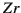
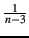
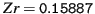

"ape" (Paradis et al 2004)
"MCMCglmm" (Hadfield, 2010a)
Meta-analysis data ("data_effect.txt"), Data frame containing the effect sizes
Phylogeny ("phylo.nex"), Phylogeny file (NEXUS file)
Let's use the same phylogeny as in the OPM section 11.1. We have an effect size in Fisher's z-transformation of correlation coefficient  per species along with corresponding sample sizes (e.g. correlations between male coloration and reproductive success):
library(ape) library(MCMCglmm) phylo<-read.nexus("phylo.nex") data<-read.table("data_effect.txt",header=TRUE) head(data)
## Zr N phylo ## 1 0.28918 13 sp_1 ## 2 0.02416 40 sp_2 ## 3 0.19514 39 sp_3 ## 4 0.09831 40 sp_4 ## 5 0.13780 66 sp_5 ## 6 0.13711 41 sp_6
In recent versions of MCMCglmm, this command might fail and require that you install and load the library "orthopolynom". As you may have noticed the syntax is pretty much the same as in the OPM section 11.1, including the same prior specification. A notable difference is that we now use the argument mev, which stands for measurement error variance. We can pass vector of sampling variances to mev. We do not need a prior for sampling error variances because we assume they are known (remember for , it is ), thus not to be estimated. Also, for a quicker computation, we used nodes="ALL" in the inverseA function this time1 in the main text. The result looks like this:inv.phylo <- inverseA(phylo, nodes = "ALL", scale = TRUE)prior <- list(G = list(G1 = list(V = 1, nu = 0.02)), R = list(V = 1, nu = 0.02)) model_effect <- MCMCglmm(Zr ~ 1, random = ~phylo, family = "gaussian", mev = 1/(data$N - 3), ginverse = list(phylo = inv.phylo$Ainv), prior = prior, data = data, nitt = 5e+06, burnin = 1000, thin = 500)summary(model_effect)## ## Iterations = 1001:4999501 ## Thinning interval = 500 ## Sample size = 9998 ## ## DIC: -320.3 ## ## G-structure: ~animal ## ## post.mean l-95% CI u-95% CI eff.samp ## animal 0.00902 0.00175 0.0193 10423 ## ## R-structure: ~units ## ## post.mean l-95% CI u-95% CI eff.samp ## units 0.00608 0.00167 0.0111 9998 ## ## Location effects: Zr ~ 1 ## ## post.mean l-95% CI u-95% CI eff.samp pMCMC ## (Intercept) 0.1589 0.0601 0.2538 9147 0.0038 ** ## --- ## Signif. codes: 0 '***' 0.001 '**' 0.01 '*' 0.05 '.' 0.1 ' ' 1The meta-analytic mean is  and is significantly larger than zero. In meta-analysis, it is common to plot what is called a funnel plot where effect sizes are plotted with the inverse of the squared root of sampling error variance, called `precision' (Fig. 11.2). As you see, effect sizes funnel down around the meta-analytic mean. This is what we exactly expect because effect sizes with low precisions (low sample sizes) should have larger sampling errors. Here, we do not go any further with phylogenetic meta-analysis. But to follow up on this topic, you may want to see recent examples of phylogenetic meta-regression models using MCMCglmm in Horváthová et al (2012) and Prokop et al (2012). Other important issues in meta-analysis include statistical heterogeneity and publication bias (for further information, see Koricheva et al, 2013; Nakagawa and Santos, 2012).
Footnotes
... time1 In most analyses, this default option will be fine. As mentioned before, "TIPS" option could reduce auto-correlation and will improve the chain ``mixing''. Note that you will get a warning message, saying some missing records are generated. This is because MCMCglmm is using ancestral nodes and trait values of such nodes are treated as missing values. See more on this in section 11.3.2 in the main text.